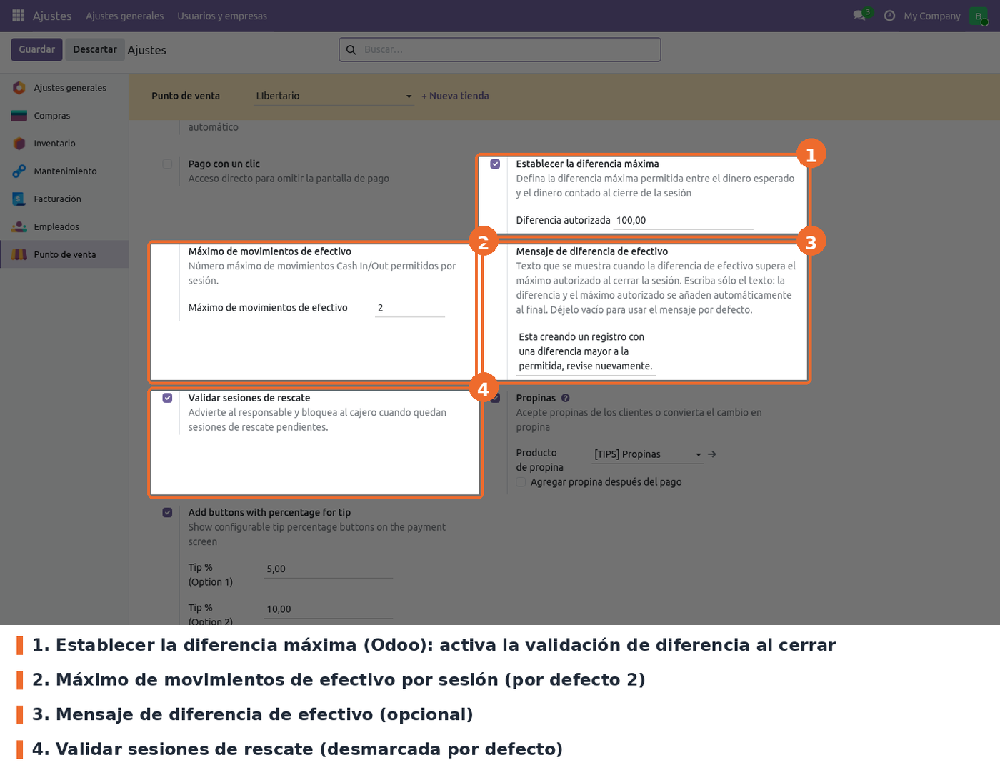
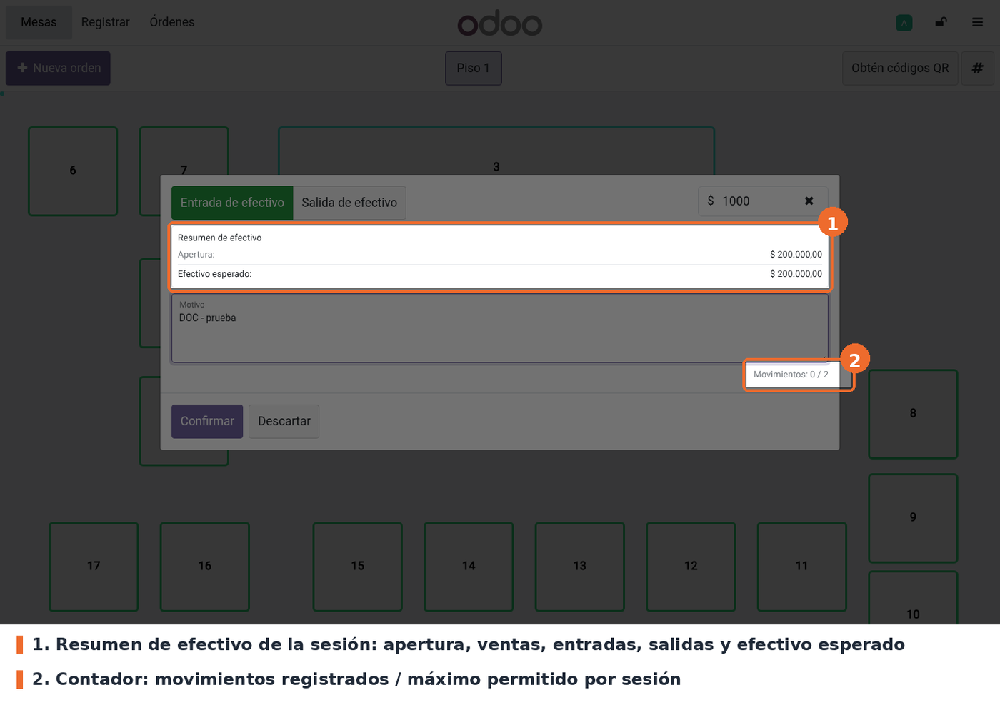
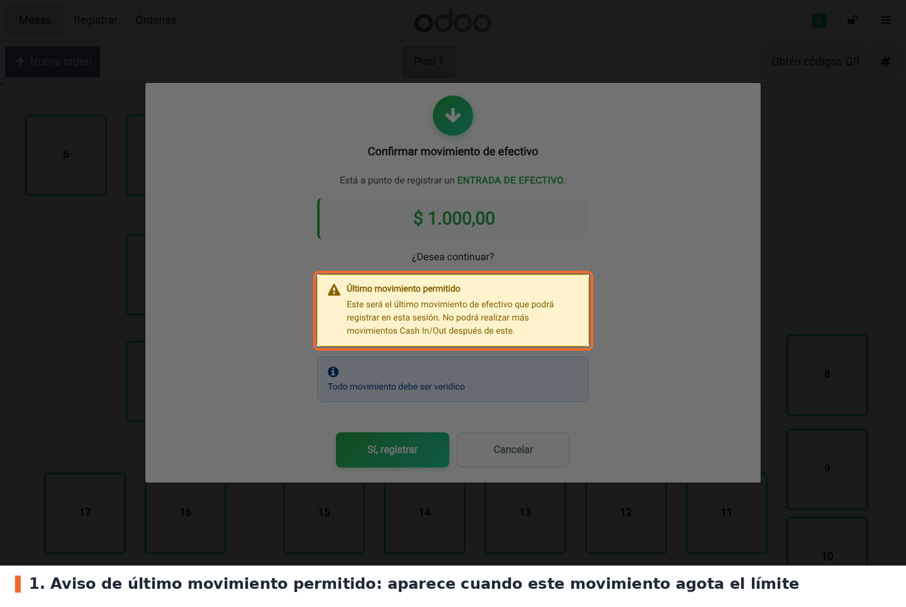
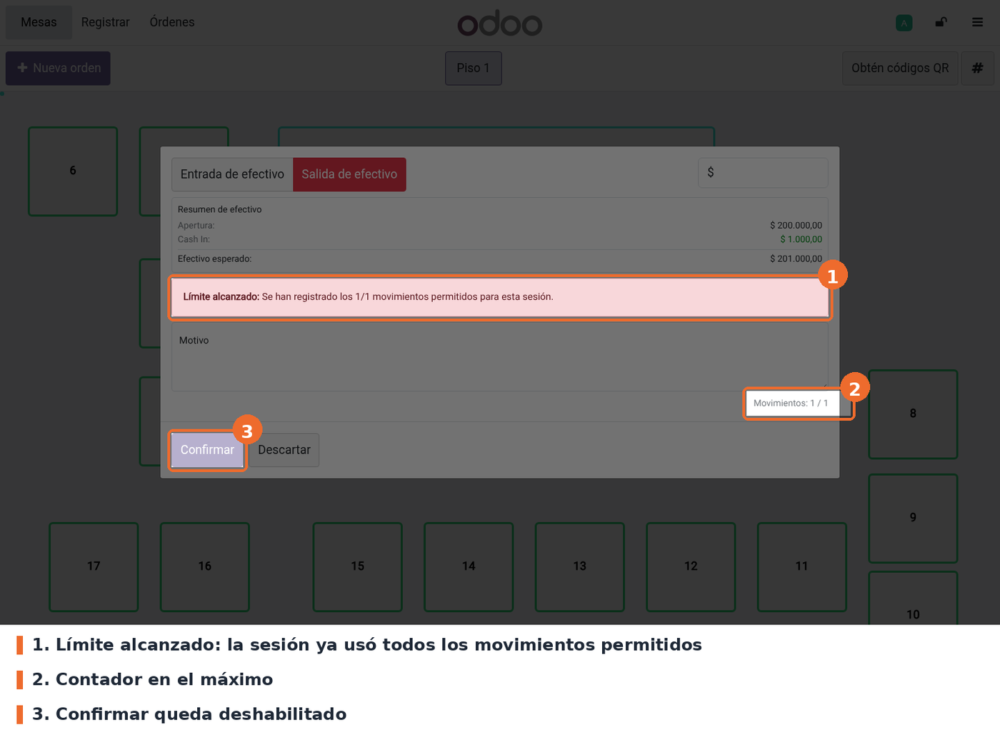

Refuerza el control de efectivo del Punto de Venta en dos momentos: durante la sesión, al registrar entradas y salidas de efectivo, y al cerrar la caja.
Durante la sesión:
Al cerrar la caja:
Opcionalmente, impide abrir una sesión nueva mientras existan sesiones de rescate sin cerrar.
point_of_sale (Odoo 19 Community). No requiere otros módulos ni librerías de Python adicionales.is_cash_count):
el resumen de efectivo y la diferencia se calculan sobre ese método, igual que en Odoo.pos_cash_in_out_message, de este mismo repositorio, depende de este módulo y usa sus avisos
dentro de su diálogo de confirmación.Instalar Pos Closing Validation desde Aplicaciones. El módulo agrega campos a la configuración del punto de venta, a la sesión y a las líneas de extracto, y los archivos del POS. No crea menús ni permisos nuevos. Después de instalar o actualizar, volver a entrar al POS desde el backend para que cargue los archivos nuevos.
maximum_cash_in_out_moves,
cash_difference_exceeded_message, enable_rescue_session_validation), por lo que la
configuración existente se mantiene sin script de datos. Lo mismo vale para la marca
pos_cash_move de los movimientos ya registrados.pos_cash_move_uuid con una restricción única por sesión. Los movimientos
históricos quedan con el valor vacío, que no viola la restricción.expected_opening_balance y validación en set_cashbox_pos). La columna queda huérfana en la
base y no se usa.Ir a Punto de venta › Configuración › Ajustes, elegir el punto de venta en la parte superior y buscar el bloque Pagos. Las opciones del módulo están junto a Establecer la diferencia máxima, que es de Odoo.

Punto de venta › Configuración › Ajustes › Pagos: diferencia máxima de Odoo y las tres opciones del módulo
set_maximum_difference y amount_authorized_diff). Opcional; desmarcada por defecto. Es el
interruptor de la validación de diferencia al cerrar: si está desmarcada, el módulo no compara el
efectivo contado con el esperado.maximum_cash_in_out_moves de pos.config).
Obligatorio; 2 por defecto. Número de entradas/salidas de efectivo permitidas por sesión. Debe
ser mayor que cero: el valor 0 o negativo se rechaza al guardar.cash_difference_exceeded_message). Opcional; vacío por
defecto. Texto del aviso que bloquea el cierre por diferencia. Solo se escribe el texto: la
diferencia y el máximo autorizado se agregan solos al final. Vacío, se usa el mensaje por defecto
del módulo.enable_rescue_session_validation). Opcional; desmarcada por
defecto. Impide abrir una sesión nueva mientras haya sesiones de rescate sin cerrar, y bloquea al
cajero (advierte al responsable) al cerrar si hay rescates pendientes con datos.A tener en cuenta:
point_of_sale.group_pos_manager) del usuario de Odoo con el que se abrió el POS. El
empleado elegido con PIN en pos_hr no cambia ese rol.En el POS, abrir el menú (☰) y elegir Entrada/salida de efectivo. Antes de abrir la ventana, el POS consulta el estado de la sesión en el servidor. La ventana muestra, además de los campos de Odoo, un resumen de efectivo (apertura, ventas en efectivo, entradas, salidas y efectivo esperado) y el contador de movimientos de la sesión frente al máximo configurado.

Ventana de entrada/salida de efectivo con el resumen y el contador de movimientos
Si el movimiento que se va a registrar es el último permitido, se pide una confirmación explícita.
Con pos_cash_in_out_message instalado, el aviso aparece dentro de su diálogo de confirmación
(captura); sin ese módulo, aparece un diálogo propio, Último movimiento de efectivo, con el
conteo y los botones Confirmar y Cancelar.

Aviso de último movimiento permitido dentro del diálogo de confirmación
Cuando la sesión ya usó todos los movimientos, la ventana muestra Límite alcanzado y el botón Confirmar queda deshabilitado. Si el aviso se saltara (por ejemplo, con una llamada directa al servidor), el servidor rechaza el movimiento con Se alcanzó el límite de movimientos de efectivo.

Ventana bloqueada por límite alcanzado: aviso, contador en el máximo y Confirmar deshabilitado
Al elegir Cerrar caja registradora, el POS consulta primero el estado de la sesión. Si el usuario no puede cerrar, aparece No se puede cerrar la sesión con los motivos, y la ventana de cierre de Odoo no llega a abrirse. Si puede, se abre la ventana de cierre estándar. Al confirmar, el servidor valida de nuevo y, si algo falla, muestra el aviso con estos botones:
Ningún aviso del módulo cancela órdenes. El botón de Odoo que cancela las órdenes abiertas se mantiene solo para los avisos propios de Odoo (por ejemplo, órdenes en borrador).
pos_hr. closing_popup_extension.xml la inserta después del desglose de entradas/salidas
del bloque estándar, pero con pos_hr activo en el punto de venta Odoo oculta ese bloque y dibuja
una copia propia. Comprobado en el POS local, que tiene pos_hr activo: la plantilla heredada
contiene la fila, pero no se muestra. Por eso no hay captura de la ventana de cierre. Verificar en
STG qué tiendas tienen pos_hr activo.cash_move_popup.xml elimina el
botón Detalles de la ventana de entrada/salida de efectivo, y en Odoo 19 esa lista solo se abre
desde ese botón. En consecuencia, cash_move_list_popup_patch.js, que oculta el borrado a los
cajeros, no tiene efecto visible. La restricción de borrado sigue aplicándose en el servidor.rescue y lo filtra, pero no se encontró código fuera de los tests que cree una sesión con
rescue=True. La validación de apertura, el bloqueo de movimientos en rescates y el enlace
rescue_parent_session_id se migraron sin cambios y podrían no activarse nunca. Para comprobarlo
en una tienda: buscar sesiones de rescate en Punto de venta › Sesiones después de operar.rescue_parent_session_id solo se completa si rescue llega en los valores de creación de la
sesión; si una versión futura marca el rescate con una escritura posterior, el vínculo queda
vacío.pos_hr. En una tienda donde
todos los empleados comparten un usuario con permisos de administrador del POS, las revisiones de
consistencia nunca bloquean.rescue_parent_session_id, rescue_session_ids) y de las líneas
de extracto (pos_cash_move, pos_cash_move_uuid) no se muestran en ninguna vista.static/description/icon.png: en Aplicaciones se ve el ícono genérico de Odoo.models/pos_config.py: los tres campos de pos.config, sus relacionados con prefijo pos_ en
res.config.settings, la restricción del límite mayor que cero y el bloqueo de apertura por
rescates pendientes (open_ui → _check_rescue_sessions_before_open_ui). Se usa UserError y no
RedirectWarning porque el controlador /pos/ui descarta el valor de retorno de open_ui().models/pos_session.py: límite e idempotencia (try_cash_in_out,
_prepare_account_bank_statement_line_vals), borrado solo para responsables
(delete_cash_in_out), bloqueo acotado de la fila de la sesión (_lock_session_row, 2 s para
movimientos y 10 s para el cierre), validaciones de cierre (_cannot_close_session,
post_closing_cash_details, _check_authorized_cash_difference) y los dos endpoints del POS,
get_cash_in_out_control_data y get_closing_validation_info, que exigen el grupo de usuario del
POS.models/account_bank_statement_line.py: la marca pos_cash_move y el identificador
pos_cash_move_uuid, con restricción única por sesión declarada con models.Constraint.views/pos_config_views.xml: las tres opciones en Ajustes › Pagos, después de Establecer la
diferencia máxima.static/src/js/pos_store_patch.js: controles previos a Entrada/salida de efectivo y a Cerrar
caja registradora, y los botones de los avisos de cierre (handleClosingError).static/src/js/cash_move_popup_patch.js y static/src/xml/cash_move_popup.xml: contador,
resumen, aviso de último movimiento, bloqueo por límite, avisos sin conexión y el identificador
del movimiento.static/src/js/cash_move_list_popup_patch.js: oculta el borrado a quien no es responsable (ver
Limitaciones conocidas).static/src/xml/closing_popup_extension.xml: la fila de movimientos en la ventana de cierre (ver
Limitaciones conocidas).pos_cash_in_out_message. Ese módulo parcha el mismo CashMovePopup y usa
isCashMoveBlocked(), isLastCashMove(), setLastMoveWarningSkipped(), getCashMoveControl(),
pos.closingValidationInfo y confirm() encadenado con super. Renombrar cualquiera obliga a
cambiar los dos módulos en el mismo commit.get_closing_control_data de Odoo no se sobreescribe a propósito: agregar claves a su respuesta
hace que OWL rechace las props de la ventana de cierre estándar.cash_register_balance_end y la
diferencia es cash_register_difference. Las entradas/salidas del resumen suman todas las líneas
de caja de la sesión por signo; el contador del límite solo cuenta las marcadas con
pos_cash_move._lt: con _ en tiempo de importación Odoo 19 no detecta el
idioma y guarda el texto sin traducir.tests/test_closing_validation.py tiene 66 tests: resumen y su igualdad con
cash_register_balance_end, límite, idempotencia, contrato del bloqueo acotado, diferencia
autorizada para todos los roles, política por rol con nota de auditoría, borrado restringido,
rescates y apertura bloqueada. La concurrencia real no se puede probar en TransactionCase: se
prueba el contrato SQL y se simula el fallo del bloqueo. El JS del POS no tiene tests
automáticos._filter_non_empty_rescues y create en pos_session.py remiten al
README.md anterior; ese contenido está ahora en Limitaciones conocidas.